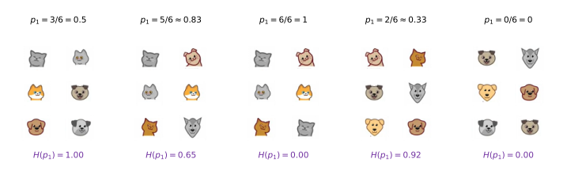
Decision Tree Learning
machine-learning
neural-networks
Entropy, information gain, the recursive tree-building algorithm, one-hot encoding, continuous features, and regression trees that predict numbers.
The previous page introduced decision trees and walked through the process of building one, leaving two key decisions open. How exactly do you measure purity, and how do you use that measurement to choose the best feature to split on at each node? This page fills in the machinery, entropy as the measure of impurity, information gain as the criterion for choosing splits, and the recursive algorithm that puts everything together to build a complete tree.
Entropy as a Measure of Impurity
The learning process on the previous page kept appealing to purity, so we need a way to measure it. If a set of examples is all cats, that is very pure. If it is all not-cats, that is also very pure. But if it is somewhere in between, how do you quantify how pure the set is? This is what entropy provides, a measure of the impurity of a set of data.
Given a set of examples, define \(p_1\) to be the fraction of examples that are cats, that is, the fraction of examples with label 1 (that is what the subscript 1 indicates). For a set of six examples with three cats and three dogs, \(p_1 = 3/6 = 0.5\).
Entropy is conventionally denoted \(H(p_1)\). Here are five different sets of six examples, with their values of \(p_1\) and the entropy each one gets.
Plotting \(H\) against \(p_1\) gives the curve below, with each of the five sets marked on it.
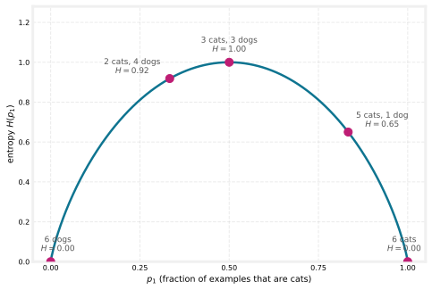
The curve is highest when the set is 50-50, the most impure a set can be, with an entropy of 1. In contrast, if the set is all cats or all not-cats, the entropy is 0. Going from three out of six cats to six out of six, the impurity decreases from 1 to 0, or in other words the purity increases as you go from a 50-50 mix to all cats. Notice also that the set with two cats and four dogs (\(H \approx 0.92\)) is more impure than the set with five cats and one dog (\(H \approx 0.65\)), because it is closer to a 50-50 mix.
Entropy Formula
To write the actual equation, define \(p_0\) to be the fraction of examples that are not cats,
\[ p_0 = 1 - p_1 \]
The entropy function is then
\[ H(p_1) = -p_1 \log_2(p_1) - p_0 \log_2(p_0) = -p_1 \log_2(p_1) - (1 - p_1)\log_2(1 - p_1) \]
Two conventions are worth knowing.
- Logs are taken to base 2, rather than base \(e\), just to make the peak of the curve equal to 1. Taking \(\log_e\) would only scale the curve vertically, and it would still work, but the numbers become harder to interpret because the peak is no longer a nice round number like 1.
- \(0 \log_2(0)\) is treated as 0. If \(p_1\) or \(p_0\) equals 0, the formula produces an expression like \(0\log_2(0)\), and \(\log_2(0)\) is technically undefined (it goes to negative infinity). By convention, for the purposes of computing entropy, \(0\log_2(0)\) is taken to be 0, which correctly gives an entropy of 0 for a completely pure set.
NoteLooks familiar?
If this definition of entropy reminds you of the logistic loss, with its \(-y\log(f) - (1-y)\log(1-f)\) shape, there is actually a mathematical rationale for why the two formulas look so similar, but it is beyond the scope of this course. Applying the entropy formula as given works just fine for building decision trees.
There are other functions with the same character, starting at 0, rising to a peak, and coming back down to 0 as a function of the fraction of positive examples. In open source packages you may also hear about the Gini criterion, another function that looks a lot like entropy and also works well for building decision trees. For simplicity, these pages focus on the entropy criterion, which usually works just fine for most applications.
With this definition of entropy in hand, the next section looks at how to actually use it to decide which feature to split on at each node of a decision tree.
Review Questions
1. Without using the formula, rank these three sets from most pure to least pure: (a) 5 cats and 1 dog, (b) 3 cats and 3 dogs, (c) 6 dogs.
TipAnswer
(c), then (a), then (b). The six dogs are a single class, completely pure with entropy 0. Five cats and one dog is close to pure (\(H \approx 0.65\)). Three cats and three dogs is a 50-50 mix, the most impure a set can be, with entropy 1.
1. A node contains 8 examples, 6 of which are cats. Compute \(p_1\), \(p_0\), and the entropy \(H(p_1)\).
TipAnswer
\(p_1 = 6/8 = 0.75\) and \(p_0 = 1 - 0.75 = 0.25\). Then \[H(0.75) = -0.75\log_2(0.75) - 0.25\log_2(0.25) = 0.75 \times 0.415 + 0.25 \times 2 \approx 0.81\] A fairly impure set, closer to the peak than to zero, since a quarter of the examples still belong to the other class.
1. Why does the entropy formula use \(\log_2\) instead of the natural log, and what is the convention for \(0\log_2(0)\)?
TipAnswer
Base 2 makes the peak of the curve exactly 1 (at \(p_1 = 0.5\)), which keeps the numbers easy to interpret; the natural log would only rescale the curve vertically. And although \(\log_2(0)\) is undefined, the term \(0\log_2(0)\) is taken to be 0 by convention, so completely pure sets (\(p_1 = 0\) or \(p_1 = 1\)) correctly get entropy 0.
1. Entropy measures impurity for a decision tree node. Which of the following statements is true?
Entropy is highest when the examples at the node are all one class
Entropy is highest when the examples at the node are a 50-50 mix of the two classes
Entropy is always equal to \(p_1\)
Entropy can only be computed when \(p_1 > 0.5\)
TipAnswer
b. The entropy curve starts at 0 (all not-cats), rises to its peak of 1 at \(p_1 = 0.5\), and falls back to 0 (all cats). A 50-50 mix is the most impure a set can be. All-one-class sets (a) have entropy 0, entropy is a curved function of \(p_1\), not \(p_1\) itself (c), and it is defined for every \(p_1\) from 0 to 1 (d).
1. Recall that entropy was defined as \(H(p_1) = -p_1\log_2(p_1) - p_0\log_2(p_0)\), where \(p_1\) is the fraction of positive examples and \(p_0\) the fraction of negative examples. At a given node of a decision tree, 6 of 10 examples are cats and 4 of 10 are not cats. Which expression calculates the entropy \(H(p_1)\) of this group of 10 animals?
\((0.6)\log_2(0.6) + (0.4)\log_2(0.4)\)
\((0.6)\log_2(0.6) + (1 - 0.4)\log_2(1 - 0.4)\)
\(-(0.6)\log_2(0.6) - (0.4)\log_2(0.4)\)
\(-(0.6)\log_2(0.6) - (1 - 0.4)\log_2(1 - 0.4)\)
TipAnswer
c. With \(p_1 = 6/10 = 0.6\) and \(p_0 = 1 - p_1 = 0.4\), the definition gives \(-(0.6)\log_2(0.6) - (0.4)\log_2(0.4) \approx 0.97\). Option (a) is missing the minus signs, and options (b) and (d) plug in \(1 - 0.4 = 0.6\) where the fraction of negative examples, \(0.4\), belongs.
Information Gain
When building a decision tree, the way to decide what feature to split on at a node is based on which choice of feature reduces entropy the most. Reduces entropy, reduces impurity, maximizes purity, all the same idea. In decision tree learning, the reduction of entropy is called information gain. This section works out how to compute it, using the decision of which feature to use at the root node of the cat classifier.
Entropy of Each Candidate Split
Splitting the 10 examples on ear shape puts five examples on the left and five on the right. On the left, four out of five are cats, so \(p_1 = 4/5 = 0.8\), and applying the entropy formula gives \(H(0.8) \approx 0.72\). On the right, one out of five is a cat, \(p_1 = 0.2\), and \(H(0.2) \approx 0.72\) as well.
Splitting on face shape instead puts seven examples on the left (four of them cats, \(p_1 = 4/7\)) and three on the right (\(p_1 = 1/3\)). The entropies come out much higher, \(H(4/7) \approx 0.99\) and \(H(1/3) \approx 0.92\).
The third option, whiskers, gives \(p_1 = 3/4\) on the left and \(p_1 = 2/6 = 1/3\) on the right, with entropies \(H(0.75) \approx 0.81\) and \(H(1/3) \approx 0.92\).
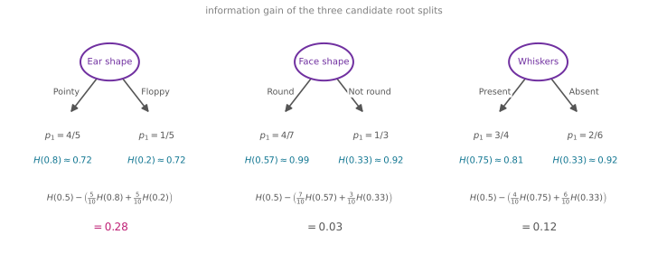
Weighted Average, Then a Reduction
Given these three options, which one works best? Rather than comparing the four entropy numbers directly, it is useful to combine each split’s two entropies into a single number by taking a weighted average, weighted by how many examples went into each branch. How important it is to have low entropy in, say, the left sub-branch depends on how many examples went there. A node with a lot of examples and high entropy is worse than a node with just a few examples and high entropy.
For the ear shape split, five of the 10 examples went left and five went right, so the weighted average is \(\frac{5}{10}H(0.8) + \frac{5}{10}H(0.2)\). For face shape, seven out of 10 went left, giving \(\frac{7}{10}H(4/7) + \frac{3}{10}H(1/3)\), and for whiskers, \(\frac{4}{10}H(0.75) + \frac{6}{10}H(1/3)\). One way to choose the split would be to compute these three numbers and pick whichever is lowest, since that gives the sub-branches with the lowest average weighted entropy.
The convention in decision tree building makes one more change to the formula, which does not alter the outcome. Rather than the weighted average entropy itself, compute the reduction in entropy compared with not splitting at all. The root node started with all 10 examples, five cats and five dogs, so \(p_1 = 0.5\) and its entropy is \(H(0.5) = 1\), maximum impurity. Subtracting each weighted average from the root’s entropy gives
\[ \begin{aligned} \text{Ear shape:} \quad & H(0.5) - \left(\tfrac{5}{10}H(0.8) + \tfrac{5}{10}H(0.2)\right) = 0.28 \\ \text{Face shape:} \quad & H(0.5) - \left(\tfrac{7}{10}H(4/7) + \tfrac{3}{10}H(1/3)\right) = 0.03 \\ \text{Whiskers:} \quad & H(0.5) - \left(\tfrac{4}{10}H(0.75) + \tfrac{6}{10}H(1/3)\right) = 0.12 \end{aligned} \]
These numbers, 0.28, 0.03, and 0.12, are the information gain of each split, and what each measures is the reduction in entropy that results from making that split. The entropy was originally 1 at the root, the split leaves a lower (weighted) entropy behind, and the difference between the two is the reduction.
Why bother computing the reduction rather than just the entropy of the sub-branches? Because one of the stopping criteria from the previous page was to stop when the improvement in purity is too small. If the reduction in entropy from a split is below a threshold, the split would grow the tree unnecessarily and risk overfitting, so you might decide not to bother. Expressing the quality of a split as a reduction makes that check direct.
In this example, splitting on ear shape gives the biggest reduction in entropy, \(0.28\) is bigger than \(0.03\) or \(0.12\), so ear shape is the feature chosen at the root node, exactly the choice used in the walkthrough on the previous page.
General Formula
To write the definition down formally, using the ear shape split as the running example, define
- \(p_1^{\text{left}}\), the fraction of examples in the left sub-branch with a positive label (cats). Here \(p_1^{\text{left}} = 4/5\).
- \(w^{\text{left}}\), the fraction of all the root node’s examples that went to the left sub-branch. Here \(w^{\text{left}} = 5/10\).
- \(p_1^{\text{right}}\) and \(w^{\text{right}}\), the same quantities for the right sub-branch, here \(1/5\) and \(5/10\). (For the face shape split, \(w^{\text{left}}\) would be \(7/10\) and \(w^{\text{right}}\) would be \(3/10\).)
- \(p_1^{\text{root}}\), the fraction of positive examples at the root node, here \(5/10 = 0.5\).
\[ \text{Information gain} = H\!\left(p_1^{\text{root}}\right) - \left( w^{\text{left}} \, H\!\left(p_1^{\text{left}}\right) + w^{\text{right}} \, H\!\left(p_1^{\text{right}}\right) \right) \]
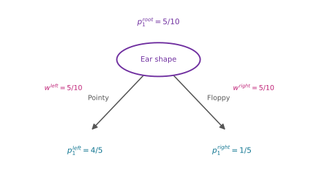
With this definition, you can calculate the information gain associated with choosing any feature to split on at a node, and then out of all the possible features, pick the one that gives the highest information gain. That results in choosing a feature that increases the purity of the subsets of data in both the left and right sub-branches of the decision tree.
Knowing how to calculate information gain, the next step is to put everything together into the overall algorithm for building a decision tree from a training set, which is what the next section covers.
Review Questions
1. In one sentence, what is information gain?
TipAnswer
The reduction in entropy achieved by a split, computed as the entropy at the node minus the weighted average of the entropies of the two sub-branches the split creates. The feature with the highest information gain is chosen for the split.
1. Why is the combined entropy of a split a weighted average rather than a plain average of the left and right entropies?
TipAnswer
Because how much a branch’s impurity matters depends on how many examples land in it. A large, impure branch affects many examples and is worse than a small, equally impure branch. Weighting each branch’s entropy by the fraction of examples it received (\(w^{\text{left}}\), \(w^{\text{right}}\)) accounts for that.
1. A node holds 10 examples, 5 of them cats (\(H(0.5) = 1\)). A candidate split sends 2 examples left with \(p_1^{\text{left}} = 1\) and 8 examples right with \(p_1^{\text{right}} = 3/8\). Using \(H(1) = 0\) and \(H(3/8) \approx 0.95\), compute the information gain.
TipAnswer
\[1 - \left(\tfrac{2}{10} \times 0 + \tfrac{8}{10} \times 0.95\right) = 1 - 0.76 = 0.24\] The small pure branch contributes nothing to the weighted entropy, but the large branch is still quite impure, so the gain is modest.
1. Why is the quality of a split expressed as a reduction in entropy rather than just the weighted entropy of the sub-branches? (Both give the same ranking of features.)
TipAnswer
Because one of the stopping criteria is to not split when the improvement in purity is too small. Framing the split’s quality as a reduction in entropy (information gain) makes that check direct. If the gain is below a threshold, skip the split, keep the tree smaller, and reduce the risk of overfitting.
1. At the cat classifier’s root node, the three candidate splits give information gains of 0.28 (ear shape), 0.03 (face shape), and 0.12 (whiskers). Which feature does the algorithm split on, and why?
TipAnswer
Ear shape, because 0.28 is the highest information gain, meaning that split reduces entropy the most and leaves the purest pair of sub-branches. This matches the tree built in the walkthrough, where ear shape was used at the root.
1. Before a split, the entropy of a group of 5 cats and 5 non-cats is \(H(5/10)\). After splitting on a particular feature, a group of 7 animals (4 of which are cats) has an entropy of \(H(4/7)\), and the other group of 3 animals (1 is a cat) has an entropy of \(H(1/3)\). What is the expression for information gain?
\(H(0.5) - \left(\tfrac{4}{7} H(4/7) + \tfrac{4}{7} H(1/3)\right)\)
\(H(0.5) - \left(\tfrac{7}{10} H(4/7) + \tfrac{3}{10} H(1/3)\right)\)
\(H(0.5) - \left(H(4/7) + H(1/3)\right)\)
\(H(0.5) - \left(7 \times H(4/7) + 3 \times H(1/3)\right)\)
TipAnswer
b. Each branch’s entropy is weighted by the fraction of the root’s examples that went there, \(w^{\text{left}} = 7/10\) and \(w^{\text{right}} = 3/10\). Option (a) confuses the weights with the cat fraction \(p_1^{\text{left}} = 4/7\), option (c) forgets the weights entirely, and option (d) weights by raw counts instead of fractions.
Full Tree-Building Algorithm
The information gain criterion decides how to pick one feature to split one node. Using it in multiple places throughout the tree gives the overall process for building a large decision tree with multiple nodes.
- Start with all training examples at the root node of the tree.
- Calculate the information gain for all possible features, and pick the feature to split on that gives the highest information gain.
- Having chosen that feature, split the dataset into two subsets according to it, create left and right branches of the tree, and send each training example to the left or right branch depending on its value of that feature.
- Keep repeating the splitting process on the left branch and on the right branch, until a stopping criterion is met, when a node is 100 percent a single class (entropy has reached zero), when further splitting would exceed the maximum depth, when the information gain from an additional split is below a threshold, or when the number of examples at a node is below a threshold. You can use one or more of these criteria.
Walkthrough, Branch by Branch
Applying this to the cat classifier, all 10 examples start at the root, and computing information gain for all three features picks ear shape as the best split (gain 0.28, as computed above). The pointy-eared subset goes to the left sub-branch and the floppy-eared subset to the right.
Now cover up the root node and the right sub-branch and focus only on the left sub-branch with its five examples. Using the criterion “keep splitting until everything in the node belongs to a single class,” this node does not meet it, there is still a mix of cats and dogs. So pick a feature to split on, going through the features one at a time and computing the information gain of each as if this node were the root of a new decision tree trained on just these five examples. The information gain for splitting on ear shape here turns out to be zero, because all five of these examples have the same pointy ear shape. Between whiskers and face shape, face shape has the highest information gain, so the five examples split by face shape. In the resulting left sub-branch, all examples are cats, the stopping criterion is met, and it becomes a leaf predicting cat. The right side is all dogs, so it becomes a leaf predicting not cat.
With the left subtree built, attention turns to the right subtree, again covering up everything else and treating its five examples as a brand-new problem. The stopping criterion is not met (the five examples are not one class), computing information gain over the features picks whiskers, and the resulting sub-branches each meet the stopping criterion, giving a leaf predicting cat and a leaf predicting not cat.
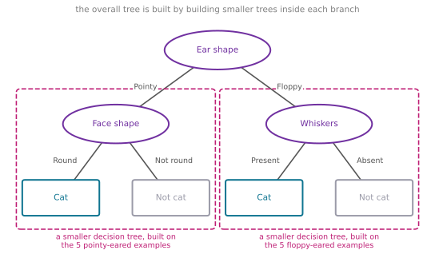
NoteRecursion
Notice the interesting aspect of what just happened. After deciding what to split on at the root node, the left subtree was built by building a decision tree on a subset of five examples, and the right subtree was built by, again, building a decision tree on a different subset of five examples. In computer science, this is an example of a recursive algorithm, which refers to writing code that calls itself. The way it comes up here is that you build the overall decision tree by building smaller sub-decision-trees and putting them all together. This is why software implementations of decision trees sometimes reference a recursive algorithm. If the concept does not feel fully clear, do not worry, you can still use decision trees and libraries perfectly well; a recursive implementation only becomes one of the steps if you are building the algorithm from scratch.
Choosing the Maximum Depth
You may be wondering how to choose the maximum depth parameter. There are many possible choices, and some open-source libraries have good default choices you can use. One intuition is that the larger the maximum depth, the bigger the decision tree you are willing to build. It is a bit like fitting a higher-degree polynomial or training a larger neural network. It lets the decision tree learn a more complex model, but it also increases the risk of overfitting by fitting a very complex function to the data. In theory you could use cross-validation to pick parameters like the maximum depth, trying different values and picking what works best on the cross-validation set, though in practice the open-source libraries have somewhat better ways of choosing the parameter for you.
The other stopping criteria work the same way as tuning knobs. Stop when the information gain from an additional split is below a threshold (a split achieving only a tiny reduction in entropy may not be worth it), or stop when the number of examples in a node falls below a threshold.
Once the tree is built, making a prediction follows the procedure from the start of the previous page. Take a new test example, start at the root, and keep following the decisions down until reaching a leaf node, which makes the prediction.
That is the basic decision tree learning algorithm. The next sections look at refinements, starting with features that take on more than two possible values.
Review Questions
1. Put the tree-building steps in order: (a) split the dataset into two subsets and send examples down the branches, (b) start with all examples at the root, (c) repeat the process on each branch until a stopping criterion is met, (d) compute information gain for every feature and pick the highest.
TipAnswer
(b), (d), (a), (c). All examples start at the root, information gain selects the split feature, the data splits into left and right branches, and then the same process repeats on each branch until the stopping criteria are met.
1. On the left branch (the five pointy-eared examples), why is the information gain for splitting on ear shape exactly zero?
TipAnswer
Because all five examples have the same value, pointy. Splitting on ear shape would send every example to the same side, leaving the subset’s mix of cats and dogs, and therefore its entropy, completely unchanged. No reduction in entropy means an information gain of zero, so the algorithm considers the other features instead.
1. In what sense is the decision tree building algorithm “recursive”?
TipAnswer
After the root split, each branch is handled by running the very same tree-building procedure on that branch’s subset of examples, as if it were a brand-new, smaller training set. Building the overall tree means building smaller sub-trees and assembling them, which in computer science terms is an algorithm that calls itself.
1. Increasing the maximum depth of a decision tree is compared to fitting a higher-degree polynomial or training a larger neural network. What is the trade-off, and how could the depth be chosen in principle?
TipAnswer
A deeper tree can represent a more complex function, which reduces bias but increases the risk of overfitting the training data, just like adding polynomial degrees or network capacity. In principle, maximum depth could be tuned with cross-validation, trying different depths and keeping the one with the best cross-validation performance, though in practice open-source libraries provide good defaults and better built-in ways to choose it.
1. Which of these are commonly used criteria to decide to stop splitting? (Choose two.)
When the tree has reached a maximum depth
When the number of examples in a node is below a threshold
When the information gain from additional splits is too large
When a node is 50% one class and 50% another class (highest possible value of entropy)
TipAnswer
a and b. Limiting the depth and requiring a minimum number of examples both keep the tree small and reduce overfitting. Option (c) is backwards, splitting stops when the gain is too small, a large gain is exactly when splitting is worthwhile. Option (d) describes the most impure node possible, which is precisely where a split helps most; the purity-based stopping criterion is the opposite, a node that is 100 percent a single class.
One-Hot Encoding of Categorical Features
In the example so far, each of the features could take on only one of two possible values. The ear shape was either pointy or floppy, the face shape was either round or not round, and whiskers were either present or absent. But what if you have features that can take on more than two discrete values?
Here is a new training set for the pet adoption center application, where all the data is the same except for the ear shape feature. Rather than only pointy or floppy, ear shape can now also be oval. It is still a categorical feature, but it can take on three possible values.
| Animal | # | Ear shape | Face shape | Whiskers | Cat? |
|---|---|---|---|---|---|
 |
1 | Pointy | Round | Present | 1 |
 |
2 | Oval | Not round | Present | 1 |
 |
3 | Floppy | Round | Absent | 0 |
 |
4 | Pointy | Not round | Present | 0 |
 |
5 | Oval | Round | Present | 1 |
 |
6 | Pointy | Round | Absent | 1 |
 |
7 | Floppy | Not round | Absent | 0 |
 |
8 | Oval | Round | Absent | 1 |
 |
9 | Floppy | Round | Absent | 0 |
 |
10 | Floppy | Round | Absent | 0 |
One consequence is that splitting on this feature now creates three subsets of the data, and the tree ends up with three sub-branches at that node.
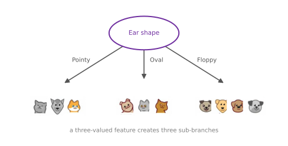
This works, but there is a different way of addressing features that take on more than two values, called one-hot encoding. Rather than using an ear shape feature that can take on any of three possible values, create three new features, does this animal have pointy ears, does it have floppy ears, and does it have oval ears. The first example, previously ear shape pointy, now gets a value of 1 for the pointy-ears feature and 0 for floppy and oval. The second example, previously oval ears, gets 0 for pointy (it does not have pointy ears), 0 for floppy, and 1 for oval, and so on for the rest of the dataset.
| Animal | # | Pointy ears | Floppy ears | Oval ears | Face shape | Whiskers | Cat? |
|---|---|---|---|---|---|---|---|
| 1 | 1 | 0 | 0 | Round | Present | 1 | |
| 2 | 0 | 0 | 1 | Not round | Present | 1 | |
| 3 | 0 | 1 | 0 | Round | Absent | 0 | |
| 4 | 1 | 0 | 0 | Not round | Present | 0 | |
| 5 | 0 | 0 | 1 | Round | Present | 1 | |
| 6 | 1 | 0 | 0 | Round | Absent | 1 | |
| 7 | 0 | 1 | 0 | Not round | Absent | 0 | |
| 8 | 0 | 0 | 1 | Round | Absent | 1 | |
| 9 | 0 | 1 | 0 | Round | Absent | 0 | |
| 10 | 0 | 1 | 0 | Round | Absent | 0 |
Instead of one feature taking on three possible values, there are now three new features, each of which can take on only one of two possible values, 0 or 1.
In a little more detail, the general rule is this. If a categorical feature can take on \(k\) possible values (\(k = 3\) in the example), replace it by creating \(k\) binary features that can only take on the values 0 or 1. Notice that among the three new features, in any row exactly one of the values equals 1, and that is what gives this method of feature construction the name one-hot encoding. One of the features will always take on the “hot” value of 1.
With this choice of features, we are back in the original setting where every feature takes on only one of two possible values, so the decision tree learning algorithm seen previously applies to this data with no further modification.
One-Hot Encoding Beyond Decision Trees
As an aside, even though this material is focused on training decision tree models, the idea of using one-hot encoding for categorical features also works for training neural networks. Take the face shape feature and replace round and not round with 1 and 0 (round maps to 1), and similarly replace whiskers present and absent with 1 and 0. All the categorical features, three possible values for ear shape, two for face shape, and two for whiskers, are now encoded as a list of five numbers.
| # | Pointy ears | Floppy ears | Oval ears | Face round | Whiskers present | Cat? |
|---|---|---|---|---|---|---|
| 1 | 1 | 0 | 0 | 1 | 1 | 1 |
| 2 | 0 | 0 | 1 | 0 | 1 | 1 |
| 3 | 0 | 1 | 0 | 1 | 0 | 0 |
This list of five features can be fed to a neural network or to logistic regression to train a cat classifier. One-hot encoding is a technique that works not just for decision tree learning but also lets you encode categorical features with ones and zeros, so they can be fed as inputs to a neural network, which expects numbers as inputs, or used in linear or logistic regression training.
With one-hot encoding, a decision tree can work on features that take on more than two discrete values. But how about features that are numbers that can take on any value, not just a small set of discrete ones? The next section looks at how a decision tree can handle continuous-valued features.
Review Questions
1. A categorical feature “coat color” takes on 4 possible values (black, white, brown, striped). How does one-hot encoding represent it, and what do the rows look like?
TipAnswer
Replace the single feature with \(k = 4\) binary features, “is black,” “is white,” “is brown,” “is striped,” each 0 or 1. In every row exactly one of the four is 1 (the “hot” one) and the rest are 0. A striped animal gets \((0, 0, 0, 1)\).
1. Why does one-hot encoding let the decision tree algorithm run with no further modification?
TipAnswer
Because it converts a multi-valued categorical feature back into features that take on only two values, 0 or 1, which is the setting the algorithm already handles. Every candidate split is again binary, left or right, and information gain applies exactly as before, rather than needing three-way splits and three sub-branches.
1. Where does the name “one-hot” come from?
TipAnswer
Among the \(k\) binary features created from one categorical feature, exactly one of them takes the value 1 in any given example, that one is “hot,” and all the others are 0.
1. Which of the following is a reason one-hot encoding matters beyond decision trees?
It reduces the number of features in the dataset
It turns categorical values into numbers, which models like neural networks and logistic regression require as inputs
It increases the entropy of the training set
It removes the need for a cross-validation set
TipAnswer
b. Neural networks, linear regression, and logistic regression expect numeric inputs, and one-hot encoding represents categories as 0s and 1s they can consume. It actually increases the number of features, one per category value (a), and it has nothing to do with entropy of the labels (c) or the need for cross-validation (d).
1. To represent 3 possible values for the ear shape, you can define 3 features for ear shape, pointy ears, floppy ears, and oval ears. For an animal whose ears are not pointy, not floppy, but are oval, how can you represent this information as a feature vector?
\([0, 1, 0]\)
\([0, 0, 1]\)
\([1, 0, 0]\)
\([1, 1, 0]\)
TipAnswer
b. With the features ordered (pointy, floppy, oval), the animal gets 0 for pointy, 0 for floppy, and the single “hot” 1 in the oval position. Options (a) and (c) put the 1 on the wrong feature, and option (d) has two hot values, which one-hot encoding never produces for a single categorical feature.
Continuous-Valued Features
Next, the decision tree gets modified to work with features that are not just discrete values but continuous values, features that can be any number. The cat adoption center dataset gains one more feature, the weight of the animal in pounds. On average cats are a little lighter than dogs, although some cats are heavier than some dogs, so weight is a useful feature for deciding whether an animal is a cat.
| Animal | # | Ear shape | Face shape | Whiskers | Weight (lbs.) | Cat? |
|---|---|---|---|---|---|---|
| 1 | Pointy | Round | Present | 7.2 | 1 | |
| 2 | Floppy | Not round | Present | 8.8 | 1 | |
| 3 | Floppy | Round | Absent | 15 | 0 | |
| 4 | Pointy | Not round | Present | 9.2 | 0 | |
| 5 | Pointy | Round | Present | 8.4 | 1 | |
| 6 | Pointy | Round | Absent | 7.6 | 1 | |
| 7 | Floppy | Not round | Absent | 11 | 0 | |
| 8 | Pointy | Round | Absent | 10.2 | 1 | |
| 9 | Floppy | Round | Absent | 18 | 0 | |
| 10 | Floppy | Round | Absent | 20 | 0 |
The learning algorithm proceeds as before, except that rather than considering splits on just ear shape, face shape, and whiskers, it now considers splitting on ear shape, face shape, whiskers, or weight. If splitting on weight gives better information gain than the other options, then the split uses weight. But how do you decide how to split on a continuous feature?
Trying Different Thresholds
Here is a plot of the data at the root node, with the animal’s weight on the horizontal axis and the label on the vertical axis, cat (\(y = 1\)) on top and not cat (\(y = 0\)) below. Splitting on the weight feature means splitting the data based on whether the weight is less than or equal to some threshold, say 8 or some other number, and it is the job of the learning algorithm to choose the threshold. The approach is to consider many different values of the threshold and pick the one that is best, meaning the one that results in the best information gain.
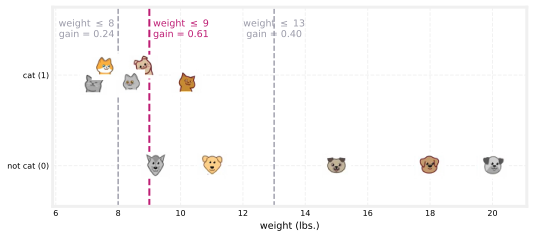
Consider splitting on whether the weight is \(\leq 8\). That splits the dataset into two subsets, where the subset on the left has two animals, both cats, and the subset on the right has eight animals, three cats and five dogs. The usual information gain calculation gives
\[ H(0.5) - \left( \tfrac{2}{10} H\!\left(\tfrac{2}{2}\right) + \tfrac{8}{10} H\!\left(\tfrac{3}{8}\right) \right) = 0.24 \]
But other values should be tried as well. Splitting on weight \(\leq 9\) puts four animals on the left, all cats, and six on the right, of which one is a cat,
\[ H(0.5) - \left( \tfrac{4}{10} H\!\left(\tfrac{4}{4}\right) + \tfrac{6}{10} H\!\left(\tfrac{1}{6}\right) \right) = 0.61 \]
which looks much better, 0.61 is a much higher information gain than 0.24. Trying another value, say 13, gives seven animals on the left (five cats) and three on the right (no cats),
\[ H(0.5) - \left( \tfrac{7}{10} H\!\left(\tfrac{5}{7}\right) + \tfrac{3}{10} H\!\left(\tfrac{0}{3}\right) \right) = 0.40 \]
In the general case, the algorithm tries not just three values but many values along the axis. One convention is to sort all the examples by the value of the feature and take the midpoints between consecutive values in the sorted list as the candidate thresholds. With 10 training examples, that means testing 9 different possible thresholds and picking the one that gives the highest information gain.
Finally, if the information gain from splitting at the chosen threshold is better than the information gain from splitting on any other feature, the node splits on the continuous feature. In this example, the gain of 0.61 turns out to be higher than that of any other feature, so the dataset splits according to whether the animal’s weight is \(\leq 9\) pounds, four light animals on one side, six heavier ones on the other, and the rest of the tree is then built recursively from those two subsets, exactly as before.
To summarize, to get a decision tree to work on continuous-valued features, at every node, when considering splits, try different threshold values, carry out the usual information gain calculation, and split on the continuous feature with the selected threshold if it gives the best possible information gain out of all the features.
That completes the core decision tree algorithm. The next section is a generalization for regression trees. So far decision trees have only made classification predictions, a discrete category such as cat or not cat, and regression trees extend them to predict a number.
Review Questions
1. Describe the procedure for splitting a node on a continuous feature. How many candidate thresholds get tested with \(m\) training examples at the node?
TipAnswer
Sort the examples by the feature’s value, take the midpoints between consecutive sorted values as candidate thresholds, compute the information gain for splitting at each (\(\leq\) threshold goes left, otherwise right), and keep the threshold with the highest gain. With \(m\) examples there are \(m - 1\) midpoints, so 9 candidates for 10 examples.
1. At the threshold weight \(\leq 9\), the left subset is four cats and the right subset is six animals with one cat. Verify the information gain of 0.61, using \(H(1/6) \approx 0.65\).
TipAnswer
\[1 - \left(\tfrac{4}{10}H(1) + \tfrac{6}{10}H\!\left(\tfrac{1}{6}\right)\right) = 1 - (0.4 \times 0 + 0.6 \times 0.65) = 1 - 0.39 = 0.61\] The left branch is completely pure, so it contributes nothing to the weighted entropy, and the right branch is fairly pure too.
1. Once weight \(\leq 9\) wins at the root, how does the algorithm continue building the rest of the tree?
TipAnswer
Exactly as with categorical splits. The dataset divides into the two subsets (weight \(\leq 9\) and weight \(> 9\)), and the same tree-building procedure runs recursively on each subset, considering all features again (including weight, possibly with new thresholds) until the stopping criteria are met.
1. For a continuous valued feature (such as the weight of the animal), there are 10 animals in the dataset. According to the lecture, what is the recommended way to find the best split for that feature?
Use a one-hot encoding to turn the feature into a discrete feature vector of 0s and 1s, then apply the algorithm discussed for discrete features
Choose the 9 mid-points between the 10 examples as possible splits, and find the split that gives the highest information gain
Try every value spaced at regular intervals (e.g., 8, 8.5, 9, 9.5, 10, etc.) and find the split that gives the highest information gain
Use gradient descent to find the value of the split threshold that gives the highest information gain
TipAnswer
b. Sort the examples by the feature’s value and test the mid-points between consecutive examples, 9 candidates for 10 examples, keeping the threshold with the highest information gain. One-hot encoding (a) is for categorical features, not numbers. A fixed grid of values (c) wastes candidates and can miss the informative boundaries between neighboring examples. And information gain as a function of the threshold is a step function, flat between data points, so gradient descent (d) has no slope to follow.
Regression Trees
So far, decision trees have only performed classification. This section generalizes them to regression algorithms, so they can predict a number. The example reuses the three categorical features from before, ear shape, face shape, and whiskers, as the inputs \(X\), but now to predict the weight of the animal as the target output \(y\). To be clear, unlike the previous section, weight is no longer an input feature. It is the number to predict, which makes this a regression problem.
Here is a regression tree already constructed for this problem. The root splits on ear shape, and then both the left and right subtrees split on face shape. There is nothing wrong with a decision tree that chooses to split on the same feature in the left and right sub-branches; it is perfectly fine if the splitting algorithm chooses to do that.
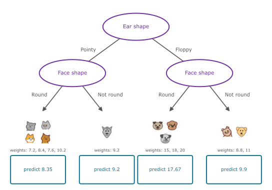
The remaining thing to fill in is what number the tree should predict at each leaf. If a test example comes down to the leftmost node, animals with pointy ears and a round face, the tree predicts the average of the weights of the training examples that ended up at that leaf. Averaging 7.2, 8.4, 7.6, and 10.2 gives 8.35. If instead an animal has pointy ears and a not-round face shape, the tree predicts 9.2, the weight of the single animal at that leaf, and similarly for the other two leaves. Given a new test example, the model follows the decision nodes down as usual until it reaches a leaf node, then predicts the value computed from the training examples that landed there.
Choosing a Split with Variance
If you were constructing this regression tree from scratch, the key decision is the same as before. Which feature do you split on? When building a regression tree, rather than trying to reduce entropy, the measure of impurity for classification, we instead try to reduce the variance of the values of \(y\) in each subset of the data. Variance is the statistical notion you may have seen in other contexts, and if you have not, all you need here is the informal idea. Variance measures how widely a set of numbers varies. The five weights 7.2, 9.2, 8.4, 7.6, 10.2 do not vary much, and their variance is 1.47, whereas 8.8, 15, 11, 18, 20 run all the way from 8.8 up to 20, giving a much larger variance of 21.87.
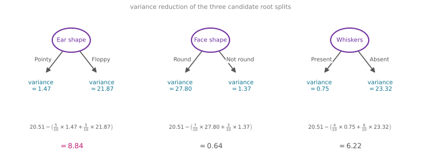
The quality of a split is evaluated much like before. Compute \(w^{\text{left}}\) and \(w^{\text{right}}\), the fraction of examples that went to each branch, and take the weighted average variance after the split. For the ear shape split, that is \(\frac{5}{10} \times 1.47 + \frac{5}{10} \times 21.87\). This weighted average variance plays exactly the role that the weighted average entropy played for classification, and the same calculation repeats for the other candidate features. Face shape gives variances of 27.80 and 1.37 with \(w^{\text{left}} = 7/10\) and \(w^{\text{right}} = 3/10\), and whiskers gives 0.75 and 23.32 with weights \(4/10\) and \(6/10\). One good way to choose a split would be to pick the lowest weighted variance.
As with information gain, one more modification sticks to convention: measure the reduction in variance instead. Taking all 10 examples in the training set and computing the variance of their weights gives 20.51, the variance at the root node (the same for all three candidate splits, of course, since the root holds the same 10 examples). Subtracting each split’s weighted average variance from 20.51 gives the reductions, 8.84 for ear shape, 0.64 for face shape (a very small reduction), and 6.22 for whiskers.
Just as the classification tree chose the feature with the largest information gain, the regression tree chooses the feature with the largest reduction in variance, which is why ear shape, at 8.84, gets chosen at the root. Having split on ear shape, there are two subsets of five examples, and the algorithm proceeds recursively. Build a new regression tree on the left five examples, evaluating features by variance reduction, do the same on the right, and keep splitting until the stopping criteria are met.
With this technique, decision trees handle not just classification problems but regression problems too. That completes the training of a single decision tree. It turns out that training a lot of decision trees, called a tree ensemble, gives much better results, and that is where the next page picks up.
Review Questions
1. In a regression tree, what does a leaf node predict, and where does that number come from?
TipAnswer
It predicts a single number, the average of the target values (\(y\), here the weight) of all the training examples that ended up at that leaf during training. A test example that reaches the leaf with training weights 7.2, 8.4, 7.6, and 10.2 gets the prediction 8.35.
1. What quantity replaces entropy when a regression tree evaluates a split, and what does that quantity measure?
TipAnswer
Variance of the target values in each subset. Where entropy measured how impure a mix of class labels is, variance measures how widely a set of numbers spreads out. A branch whose weights are tightly clustered (variance 1.47) is “purer” for regression purposes than one whose weights run from 8.8 to 20 (variance 21.87), because the leaf average will represent its examples well.
1. A root node has variance 20.51. A candidate split sends 4 examples left with variance 0.75 and 6 examples right with variance 23.32. Compute the reduction in variance.
TipAnswer
\[20.51 - \left(\tfrac{4}{10} \times 0.75 + \tfrac{6}{10} \times 23.32\right) = 20.51 - (0.30 + 13.99) = 20.51 - 14.29 = 6.22\] This is exactly the whiskers split from the example, a solid reduction, but smaller than ear shape’s 8.84, so ear shape still wins.
1. The example regression tree splits on face shape in both the left and right sub-branches. Is that a mistake?
TipAnswer
No. Each branch is built independently on its own subset of examples, and whichever feature gives the largest variance reduction there gets chosen, even if the sibling branch happened to choose the same feature. There is nothing wrong with a tree that reuses a feature across branches (or, for continuous features, reuses the same feature at different thresholds down one path).
Lab: Decision Trees from Scratch
This lab implements the ideas of this page in code, computing entropy, weighted entropy, and information gain from scratch on the cat classification dataset, and then visualizing how the tree gets split. Everything runs on plain numpy.
import numpy as npRecall the entropy function and how it behaves as \(p\) varies. Drag the handle below to adjust \(p\) and watch the red dot trace the curve. \(H\) attains its highest value at \(p = 0.5\), when the event is a 50-50 coin flip, and its minimum value at \(p = 0\) and \(p = 1\), when the outcome is totally predictable. In that sense, entropy shows the degree of unpredictability of an event.
Here is the same entropy function in code, which the rest of the lab reuses.
def entropy(p):
if p == 0 or p == 1:
return 0
else:
return -p * np.log2(p) - (1 - p) * np.log2(1 - p)
print(entropy(0.5))1.0Encoding the Dataset
The dataset is the 10-animal table from the lectures, encoded in the one-hot style. For each feature, the value 1 means pointy ear shape, round face shape, or whiskers present, and 0 means the other value.
X_train = np.array([[1, 1, 1],
[0, 0, 1],
[0, 1, 0],
[1, 0, 1],
[1, 1, 1],
[1, 1, 0],
[0, 0, 0],
[1, 1, 0],
[0, 1, 0],
[0, 1, 0]])
y_train = np.array([1, 1, 0, 0, 1, 1, 0, 1, 0, 0])
# For instance, the first example
X_train[0]array([1, 1, 1])This means the first example has a pointy ear shape, a round face shape, and whiskers. On each node, the algorithm computes the information gain for each feature, then splits the node on the feature with the highest information gain, comparing the entropy of the node with the weighted entropy of the two resulting nodes.
The root node holds every animal in the dataset, and \(p_1^{\text{node}}\), the proportion of positive class (cats), is \(5/10 = 0.5\), so the entropy printed above, \(H(0.5) = 1\), is the root’s entropy.
Splitting a Node
The first helper takes the dataset and a feature index and returns two lists of example indices, the left node with the animals that have that feature equal to 1, and the right node with those that have it equal to 0. Feature index 0 is ear shape, 1 is face shape, and 2 is whiskers. Note that the code counts examples from 0 to 9, whereas the table numbers them 1 to 10.
def split_indices(X, index_feature):
"""Given a dataset and an index feature, return two lists for the two split nodes.
The left node has the animals with that feature = 1, and the right node those
with the feature = 0.
index feature = 0 => ear shape
index feature = 1 => face shape
index feature = 2 => whiskers
"""
left_indices = []
right_indices = []
for i, x in enumerate(X):
if x[index_feature] == 1:
left_indices.append(i)
else:
right_indices.append(i)
return left_indices, right_indices
split_indices(X_train, 0)([0, 3, 4, 5, 7], [1, 2, 6, 8, 9])Choosing ear shape (feature 0) puts examples 0, 3, 4, 5, and 7 in the left node, the pointy-eared animals, and the remaining ones on the right, matching the walkthrough.
Weighted Entropy and Information Gain
The next function computes the weighted entropy of the split. Two pairs of quantities are needed, and it is worth noting the difference between them.
- \(w^{\text{left}}\) and \(w^{\text{right}}\), the proportion of animals that went to each node, out of all the animals at the parent.
- \(p^{\text{left}}\) and \(p^{\text{right}}\), the proportion of cats within each split.
For the ear shape split at the root, the left node holds animals 0, 3, 4, 5, and 7, so \(w^{\text{left}} = 5/10 = 0.5\) while \(p^{\text{left}} = 4/5\), and on the right \(w^{\text{right}} = 0.5\) while \(p^{\text{right}} = 1/5\).
def weighted_entropy(X, y, left_indices, right_indices):
"""
This function takes the split dataset and the chosen index lists,
and returns the weighted entropy of the split.
"""
w_left = len(left_indices) / len(X)
w_right = len(right_indices) / len(X)
p_left = sum(y[left_indices]) / len(left_indices)
p_right = sum(y[right_indices]) / len(right_indices)
weighted_entropy = w_left * entropy(p_left) + w_right * entropy(p_right)
return weighted_entropy
left_indices, right_indices = split_indices(X_train, 0)
weighted_entropy(X_train, y_train, left_indices, right_indices)np.float64(0.7219280948873623)The weighted entropy of the two split nodes is 0.72. To get the information gain, subtract it from the entropy of the node that was split, in this case the root.
def information_gain(X, y, left_indices, right_indices):
"""
Here, X has the elements in the node and y is their respective classes.
"""
p_node = sum(y) / len(y)
h_node = entropy(p_node)
w_entropy = weighted_entropy(X, y, left_indices, right_indices)
return h_node - w_entropy
information_gain(X_train, y_train, left_indices, right_indices)np.float64(0.2780719051126377)Now compute the information gain for splitting the root node on each of the three features.
for i, feature_name in enumerate(["Ear Shape", "Face Shape", "Whiskers"]):
left_indices, right_indices = split_indices(X_train, i)
i_gain = information_gain(X_train, y_train, left_indices, right_indices)
print(f"Feature: {feature_name}, information gain if we split the root node "
f"using this feature: {i_gain:.2f}")Feature: Ear Shape, information gain if we split the root node using this feature: 0.28
Feature: Face Shape, information gain if we split the root node using this feature: 0.03
Feature: Whiskers, information gain if we split the root node using this feature: 0.12The best feature to split on is indeed ear shape, and the three numbers are exactly the 0.28, 0.03, and 0.12 computed by hand earlier.
Building the Tree Recursively
To grow the whole tree, the same computations repeat at each node on that node’s subset of examples. The helpers below generalize the functions above to work on an arbitrary subset of indices, and get_best_split simply tries every feature and keeps the one with the highest gain.
NoteIndex-based helper versions
def compute_entropy(y):
if len(y) == 0:
return 0
p1 = sum(y[y == 1]) / len(y)
if p1 == 0 or p1 == 1:
return 0
return -p1 * np.log2(p1) - (1 - p1) * np.log2(1 - p1)
def split_dataset(X, node_indices, feature):
left_indices = []
right_indices = []
for i in node_indices:
if X[i][feature] == 1:
left_indices.append(i)
else:
right_indices.append(i)
return left_indices, right_indices
def compute_information_gain(X, y, node_indices, feature):
left_indices, right_indices = split_dataset(X, node_indices, feature)
y_node = y[node_indices]
y_left, y_right = y[left_indices], y[right_indices]
w_left = len(y_left) / len(y_node)
w_right = len(y_right) / len(y_node)
weighted = w_left * compute_entropy(y_left) + w_right * compute_entropy(y_right)
return compute_entropy(y_node) - weighted
def get_best_split(X, y, node_indices):
best_feature = -1
max_info_gain = 0
for feature in range(X.shape[1]):
info_gain = compute_information_gain(X, y, node_indices, feature)
if info_gain > max_info_gain:
max_info_gain = info_gain
best_feature = feature
return best_featureThe tree builder itself is short, and it is a direct implementation of the recursive algorithm. Pick the best feature at this node, split, and call yourself on each half, stopping when the maximum depth is reached.
def build_tree_recursive(X, y, node_indices, branch_name, max_depth, current_depth, tree):
if current_depth == max_depth:
formatting = " " * current_depth + "-" * current_depth
print(formatting, "%s leaf node with indices" % branch_name, node_indices)
return
best_feature = get_best_split(X, y, node_indices)
formatting = "-" * current_depth
print("%s Depth %d, %s: Split on feature: %d" % (formatting, current_depth, branch_name, best_feature))
left_indices, right_indices = split_dataset(X, node_indices, best_feature)
tree.append((left_indices, right_indices, best_feature))
build_tree_recursive(X, y, left_indices, "Left", max_depth, current_depth + 1, tree)
build_tree_recursive(X, y, right_indices, "Right", max_depth, current_depth + 1, tree)
return treeThe plotting helper below draws the resulting tree with the animal images at each node; it is presentation code only.
NoteTree visualization helper
FEATURE_NAMES = ["Ear Shape", "Face Shape", "Whiskers"]
VALUE_NAMES = [("Pointy", "Floppy"), ("Round", "Not round"), ("Present", "Absent")]
def draw_group(ax, indices, cx, cy, zoom=0.36, dx=0.55, per_row=5):
rows = [indices[k:k + per_row] for k in range(0, len(indices), per_row)]
for r, row in enumerate(rows):
x0 = cx - dx * (len(row) - 1) / 2
for k, i in enumerate(row):
ab = AnnotationBbox(OffsetImage(IMG[i], zoom=zoom),
(x0 + k * dx, cy - r * 0.75), frameon=False, zorder=3)
ax.add_artist(ab)
def show_tree(tree, y):
depth2 = len(tree) > 1
fig, ax = plt.subplots(figsize=(9.5, 6.4 if depth2 else 4.4))
root_l, root_r, root_f = tree[0]
root_all = sorted(root_l + root_r)
lname, rname = VALUE_NAMES[root_f]
draw_group(ax, root_all, 5.0, 6.3)
ax.text(5.0, 7.1, "Split on: %s" % FEATURE_NAMES[root_f], ha="center",
fontsize=11, color="#7030A0")
if not depth2:
edge(ax, (5.0, 5.9), (2.6, 4.3), lname, dx=-0.75, fs=10)
edge(ax, (5.0, 5.9), (7.4, 4.3), rname, dx=0.75, fs=10)
draw_group(ax, root_l, 2.6, 3.8)
draw_group(ax, root_r, 7.4, 3.8)
ax.set_ylim(2.6, 7.5)
else:
(ll, lr, lf), (rl, rr, rf) = tree[1], tree[2]
edge(ax, (5.0, 5.9), (2.6, 4.5), lname, dx=-0.75, fs=10)
edge(ax, (5.0, 5.9), (7.4, 4.5), rname, dx=0.75, fs=10)
draw_group(ax, root_l, 2.6, 4.1, zoom=0.3, dx=0.45)
draw_group(ax, root_r, 7.4, 4.1, zoom=0.3, dx=0.45)
ax.text(2.6, 4.75, "Split on: %s" % FEATURE_NAMES[lf], ha="center",
fontsize=10, color="#7030A0", zorder=4,
bbox=dict(facecolor="white", edgecolor="none", pad=1.5))
ax.text(7.4, 4.75, "Split on: %s" % FEATURE_NAMES[rf], ha="center",
fontsize=10, color="#7030A0", zorder=4,
bbox=dict(facecolor="white", edgecolor="none", pad=1.5))
for (kids, parent_x, feat) in [((ll, lr), 2.6, lf), ((rl, rr), 7.4, rf)]:
l_lab, r_lab = VALUE_NAMES[feat]
for child, off, lab, dxl in [(kids[0], -1.3, l_lab, -0.62),
(kids[1], 1.3, r_lab, 0.62)]:
x = parent_x + off
edge(ax, (parent_x, 3.7), (x, 2.4), lab, dx=dxl, fs=9)
draw_group(ax, child, x, 1.9, zoom=0.3, dx=0.45, per_row=2)
label = "Cat" if max(y[child]) == 1 and min(y[child]) == 1 else \
("Non Cat" if max(y[child]) == 0 else "Mixed")
ax.text(x, 0.55, "Leaf node:\n%s" % label, ha="center", fontsize=9,
color="#0e7490" if label == "Cat" else "#9a9aa8")
ax.set_ylim(0.1, 7.5)
ax.set_xlim(0, 10)
ax.axis("off")
plt.show()First, build the tree with a maximum depth of 1, which performs just the root split.
tree = []
build_tree_recursive(X_train, y_train, [0, 1, 2, 3, 4, 5, 6, 7, 8, 9], "Root",
max_depth=1, current_depth=0, tree=tree)
show_tree(tree, y_train) Depth 0, Root: Split on feature: 0
- Left leaf node with indices [0, 3, 4, 5, 7]
- Right leaf node with indices [1, 2, 6, 8, 9]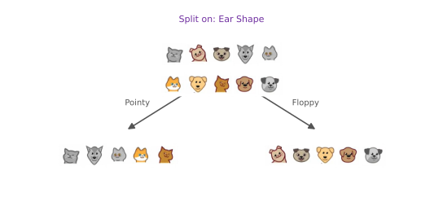
The process is recursive, so the same calculations run for each node until a stopping criterion is met, when the tree depth after splitting exceeds a threshold, when the resulting node has only one class, or when the information gain of splitting is below a threshold. Building with a maximum depth of 2 gives the final tree.
tree = []
build_tree_recursive(X_train, y_train, [0, 1, 2, 3, 4, 5, 6, 7, 8, 9], "Root",
max_depth=2, current_depth=0, tree=tree)
show_tree(tree, y_train) Depth 0, Root: Split on feature: 0
- Depth 1, Left: Split on feature: 1
-- Left leaf node with indices [0, 4, 5, 7]
-- Right leaf node with indices [3]
- Depth 1, Right: Split on feature: 2
-- Left leaf node with indices [1]
-- Right leaf node with indices [2, 6, 8, 9]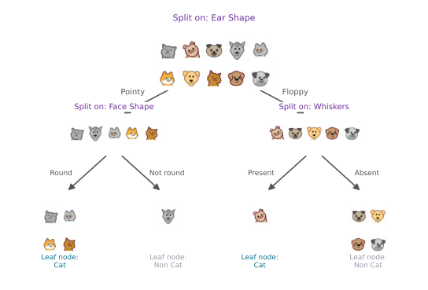
The printed trace shows the recursion at work, the root splits on feature 0 (ear shape), the left branch then splits on feature 1 (face shape), the right branch on feature 2 (whiskers), and every leaf ends up pure, exactly the tree from the lectures.
Review Questions
1. In weighted_entropy, what is the difference between \(w^{\text{left}}\) and \(p^{\text{left}}\)?
TipAnswer
\(w^{\text{left}}\) is the fraction of the parent node’s examples that went into the left branch (5 of 10, so 0.5, for the root’s ear shape split), while \(p^{\text{left}}\) is the fraction of cats among the examples inside the left branch (4 of 5, so 0.8). The first weights the branch’s contribution; the second is what the entropy gets evaluated at.
1. With max_depth=1, the builder printed two “leaf node” lines instead of splitting further, even though both nodes still contained a mix of cats and dogs. Which stopping criterion fired?
TipAnswer
The maximum depth criterion. At current_depth == max_depth the function returns immediately and declares the node a leaf, regardless of purity. With max_depth=2 the recursion continues one more level, and the resulting four leaves happen to be pure, so building stops there naturally.
1. split_indices(X_train, 0) returned ([0, 3, 4, 5, 7], [1, 2, 6, 8, 9]). How do these indices relate to the animals in the dataset table?
TipAnswer
The code numbers examples 0 through 9 while the table numbers them 1 through 10, so index 0 is table row 1. The left list holds the pointy-eared animals (table rows 1, 4, 5, 6, 8) and the right list the floppy-eared ones (rows 2, 3, 7, 9, 10).